KOMPARASI ALGORITMA SUPPORT VECTOR MACHNINE DAN ARTIFICAL NEURAL NETWORK DALAM KLASIFIKASI WEB PHISING
Adam Falizufa Sagara-2117000002
Seminar Proposal Tesis Universitas Potensi Utama
27 Juli 2022
Pembimbing
- Prof. Ts. Dr. Teddy Surya Gunawan, SMIEEE, MIET, CEng, IPU, ASEAN Eng, ACPE
- Dr. Wanayumini, S. Kom, M. Kom

- Didn't we document this services?
Yth, Dewan Penguji
- Dr. Zakarias Situmorang, MT
- Dr. Mhd Furqan, S.Si., M.Comp.Sc.
- Didn't we document this services?
- I thought we'd tested this module...
BAB I
PENDAHULUAN
- Didn't we document this services?
- Ada banyak fitur yang terkandung dalam halaman web untuk membedakan halaman web phishing dan mana yang tidak. Beberapa fitur untuk menentukan itu merupakan web phising seperti : tidak memiliki SSL, URL yang terlalu panjang, URL yang memakai lebih dari 3 titik (dot),dan penggunaan penyingkat url untuk menyembunyikan dan menarik perhatian korban (Faris & Yazid, 2021)
- Pemilihan algoritma SVM dan BP-NN untuk diterapkan ke dalam model klasifikasi web phising pada penelitian ini didasari pada penelitian sebelumnya yang sudah menerapkan algoritma SVM (Al-Shalabi, 2019; Eroğlu et al., 2019; Irawan et al., 2021; Shikalgar et al., 2019; Yuda & Suputra, 2021), dan BP-NN (Barus & Ronaldo, 2019; Ferreira et al., 2018; Pratiwi et al., 2018; Saravanan & Subramanian, 2020; Sreenidhi et al., 2022) ke dalam masalah web phising.
- Berdasarkan 5 penelitian yang membandingkan kedua algoritma ini, 3 penelitian menyatakan bahwa algoritma SVM memiliki kinerja lebih baik dan 2 penelitian menyatakan sebaliknya.Terlihat algortima SVM sedikit lebih unggul dibandingkan BP-NN, sehingga menarik untuk dianalisa bagaimana perbandingan kedua algoritma ini pada model klasifikasi yang dibangun.
- Penelitian ini bertujuan untuk membangun model klasifikasi web phising dengan menggunakan algoritma SVM dan BP-NN, serta menganalisa hasilnya menggunakan metode evaluasi k-fold cross validation. Nilai accuracy, precision, recall dan f-measure masing-masing algoritma digunakan sebagai pembanding untuk menentukan model yang memiliki kinerja terbaik dalam memecahkan masalah klasifikasi web phising.
Bagaimana cara membangun model yang dapat mengklasifikasikan situs yang termasuk ke dalam kategori web phising?
Bagaimana menerapkan algoritma SVM dan BP-NN dalam membangun model klasifikasi web phising?
Bagaimana mengukur nilai accuracy, precision, recall dan f-measure dari hasil klasifikasi algoritma SVM dan BP-NN menggunakan teknik cross validation?
Algoritma mana yang terbaik antara SVM dan BP-NN dalam mengklasifikasikan web phising berdasarkan hasil analisa cross validation?
- Membangun model klasifikasi situs yang termasuk ke dalam kategori web phising.
- Menerapkan algoritma SVM dan BP-NN ke dalam model klasifikasi web phising
- Mengukur hasil klasifikasi web phising antara algoritma SVM dan BP-NN menggunakan teknik cross validation.
- Menganalisa nilai-nilai yang diperoleh dari cross validation untuk menentukan algoritma mana yang lebih baik antara SVM dan BP-NN dalam mengklasifikasikan web phising.
- Intended: “No time to do it multi-language, that will be done in the future”
- Intended: “No time to complete the tests, that will be done when we deploy this in PRO”
- Mengetahui proses dan hasil pengembangan model klasifikasi situs yang tergolong ke dalam kategori web phising.
- Mengetahui proses dan hasil penerapan algoritma SVM dan BP-NN ke dalam model klasifikasi web phising.
- Mengetahui proses dan hasil pengukuran nilai accuracy, precision, recall dan f-measure hasil klasifikasi algoritma SVM dan BP-NN, dengan menggunakan teknik cross validation.
- Mengetahui algoritma yang terbaik antara SVM dan BP-NN dalam mengklasifikasikan web phising berdasarkan nilai-nilai yang diperoleh dari cross validation.
- Whenever we can, we measure productivity (Scrum)
- We spend too much time in regression testing
- Dataset yang digunakan dalam penelitian dibatasi pada data situs, baik yang merupakan situs web phising dan yang bukan web phising, dari Kaggle.
- Fungsi kernel yang digunakan pada algoritma SVM adalah gaussian radial basis function (RBF) dan sigmoid.
- Fungsi aktivasi yang digunakan pada algoritma BP-NN adalah ReLu dan sigmoid, sedangkan fungsi optimasi yang digunakan adalah Adam dan stochastic gradient descent (SGD).
- Output klasifikasi yang dihasilkan dibatasi pada kategori situs dalam bentuk “web phising” atau “bukan web phising” berdasarkan kriteria klasifikasi yang sudah ditentukan sebelumnya.
- Output analisa yang dihasilkan dibatasi pada nilai accuracy, precision, recall dan f-measure masing-masing kombinasi fungsi aktivasi menggunakan teknik cross validation.
- Nilai fold yang digunakan pada teknik cross validation dibatasi pada nilai 5, 10 dan 20.
BAB II
LANDASAN TEORI
- Didn't we document this services?
- I thought we'd tested this module...
- Fixing this will break that ...I think
- Don't touch that, last time someone touched $whatever broke
- Write a comment and we'll fix it later
- Write a TODO so it'll be fixed later
- Write a comment there, just above the TODO
- I just changed ONE line!
-
Machine learning berfokus pada pengembangan program komputer yang dapat mengajarkan dirinya sendiri untuk tumbuh dan berubah bila diberikan data baru.
Pembelajaran Mesin atau machine learning sudah diaplikasikan pada banyak hal, baik untuk klasifikasi gambar, mobil tanpa pengemudi, klasifikasi berita, dan sebagainya (Putra, 2019).
Menurut Kamus Besar Bahasa Indonesia, teror adalah usaha menciptakan ketakutan, kengerian, dan kekejaman oleh seseorang atau golongan. Beberapa narasi yang menunjukkan indikasi terorisme yaitu (Tahir et al,. 2020) :
• Harus memilih teman dan atasan yang mempunyai satu keyakinan.
• Pemerintah yang ada tidak memihak bahkan memusuhi agama.
• Perlunya perjuangan untuk mengganti dasar-dasar negara dan pemerintah.
Penambangan Teks atau Text Mining adalah penemuan oleh komputer akan informasi baru yang sebelumnya tidak dikenal, dengan secara otomatis mengekstraksi informasi dari sumber daya tertulis yang berbeda. Elemen kunci adalah menghubungkan bersama informasi yang diekstraksi bersama untuk membentuk fakta baru atau hipotesis baru untuk dieksplorasi lebih lanjut dengan cara eksperimen yang lebih konvensional (Hearst, 2003).
-
Preprocessing merupakan tahapan proses dalam mempersiapkan data mentah yang dapat diolah lebih lanjut. Praproses data dilakukan dengan cara mengubah data yang tidak sesuai, menjadi bentuk yang lebih mudah diproses oleh sistem.
-
Naive Bayes adalah salah satu algoritma supervised learning (terarah). Naive Bayes didasarkan pada asumsi penyederhanaan bahwa nilai atribut secara kondisional saling bebas jika diberikan nilai output. Dengan kata lain, diberikan nilai output, probabilitas mengamati secara bersama adalah produk dari probabilitas individu(Harman, 2013).
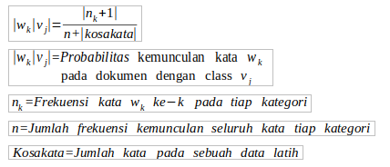
-
Python adalah bahasa pemrograman yang ditafsirkan, interaktif, dan berorientasi objek. Ini mencakup modul, pengetikan dinamis, tipe data dinamis tingkat sangat tinggi dan lainnya.
Python itu portabel: Ia berjalan pada banyak varian Unix, pada Mac, dan pada Windows 2000 dan yang lebih baru.
-
Twitter adalah jejaring sosial dan micro-blogging, yang memfasilitasi Anda, sebagai pengguna, dapat memberikan update (perbaruan) informasi tentang diri Anda, bisnis, dan lainnya. Setiap Anda menulis status pada Twitter, status tersebut disebut sebagai tweets. Tweets merupakan penulisan teks berbasis 140 karakter, akan tetapi pada tanggal 07 November 2017 bertambah hingga 280 karakter.
BAB III
METODE PENELITIAN
- Didn't we document this services?
- I thought we'd tested this module...
- Fixing this will break that ...I think
- Don't touch that, last time someone touched $whatever broke
- Write a comment and we'll fix it later
- Write a TODO so it'll be fixed later
- Write a comment there, just above the TODO
- I just changed ONE line!
-
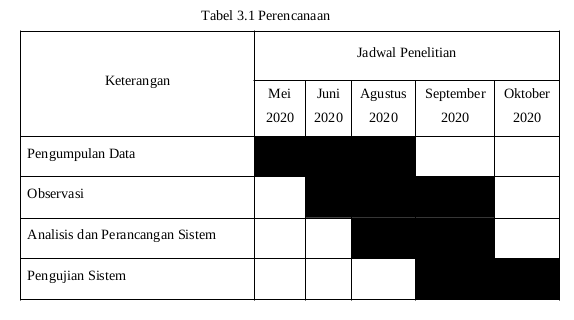
-
Bahan
tweet dari sosial media twitter yang diberikan label indikasi terorisme
-
Alat
-
Perangkat Keras
- Laptop dengan processor AMD A6-9225 RADEON R4
- Memory 4 GB
- SSD 240GB
-
Perangkat Lunak
- OS PopOS 20.04
- Bahasa Python 3.x.x
- VS Code
Prosedur Kerja
- Tahap Perencanaan
-
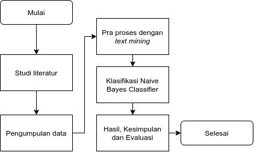
Prosedur Kerja
- Teknik Pengumpulan Data
- Studi literatur : untuk menganalisa dan membandingkan konten agar menyamakan persepsi mengenai paham terindikasi teroris.
- Observasi : mengambil langsung ke sosial media twitter dan mengambil data tweet-tweet yang akan diteliti.
Prosedur Kerja
- Analisis Kebutuhan
- Fungsi :Pengklasifikasi terhadap indikasi terorisme di sosial media dengan algoritma Naive Bayes.
- Input :Tweet-tweet yang dibutuhkan sebgai data latih yang diberi label terindikasi terorisme
- Output :Keluaran yang harus dilakukan adalah mampu mengklasifikasikan tweet yang terindikasi terorisme
Prosedur Kerja
- Tahap Perancangan
-
perancangan flowchart, perancangan antar muka dan perancangan fungsi klasfikasi.
Prosedur Kerja
- Tahap Pengujian
-
Setelah tweet telah melakukan praproses, tweet akan melakukan proses klasifikasi dengan algoritma Naive Bayes di dalam sisitem yang telah dibuat.
Prosedur Kerja
- Penggunaan
-
Menginput data-data tweet yang akan diuji untuk mengklasifikasikan tweet dan akun apakah terindikasi terorisme dengan menggunakan algoritma Naive Bayes.
BAB IV
Hasil Dan Pembahasan
Ron Jeffries thinks it is always BAD:
- Agile software development is about turning “next time” into “this time”, as often and as frequently as we can. It’s about improving the design as often as we can, as soon as we can.
- Sooner, or later, it seems, we’ll have an idea or an understanding that we can’t put in, because we, or the software, has moved on. But if we can put off that moment as long as possible, we’ll do better
Analisis Data
- Input
-
Data latih sebanyak 30 data. Data yang diperoleh kemudian dibagi atas perbandingan antara label yang terindikasi dan label tidak terindikasi, yaitu 15 data dengan label terindikasi dan 15 data dengan label tidak terindikasi agar akurasi model klasifikasi dapat baik. Kemudian data melalui tahapan praproses.
Analisis Data
- Proses
-
Data latih digunakan untuk membangun model menggunakan algoritma Naive Bayes. Model akan digunakan untuk data uji.
Analisis Data
- Output
-
Bagian output akan menunjukan hasil klasifikasi kelas data latih yang baru dan nilai yang didapatkan oleh model. Ada dua kelas yang akan diklasifikasikan yaitu terindikasi terorisme dan tidak terindikasi terorisme.
Analisis Data
-
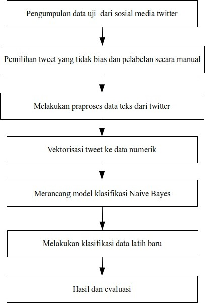
Analisis Data
contoh tweet yang dikatakan tidak terindikasi
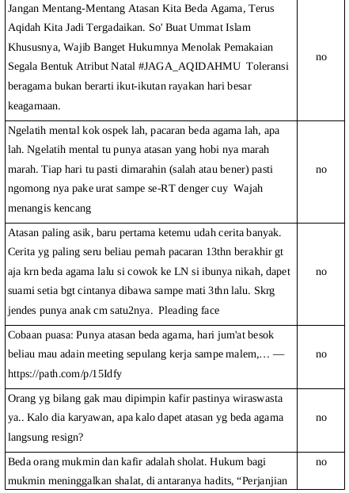Analisis Data
contoh tweet yang dikatakan terindikasi
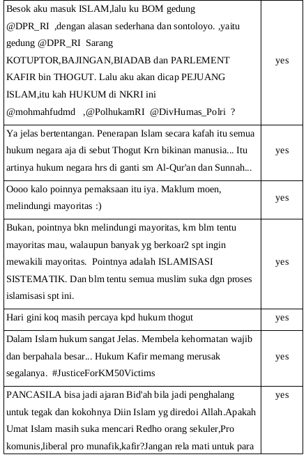Analisis Data
Hasil praproses
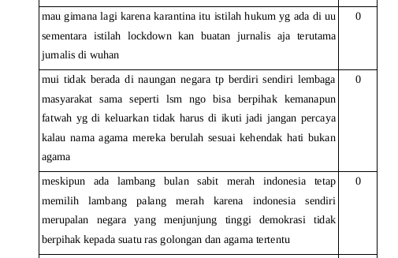Analisis Data
Tokenisasai Bag of Word
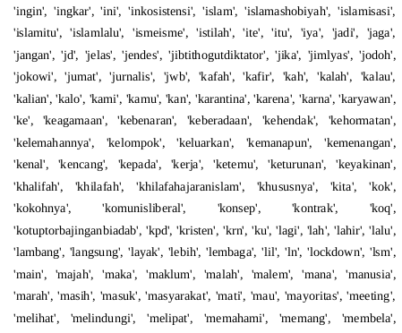Analisis Data
Naive Bayes on Text Classification
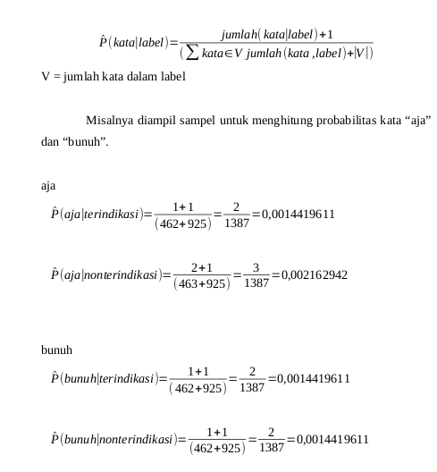Analisis Data
Perancangan
flowchart
-
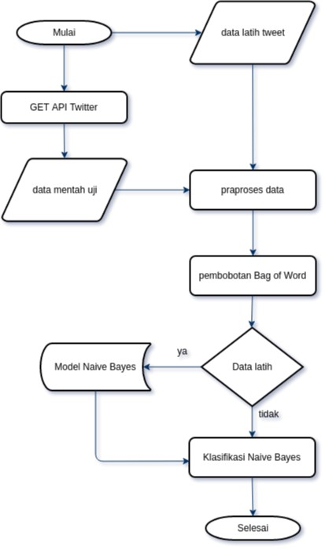
Perancangan
get API twitter
-
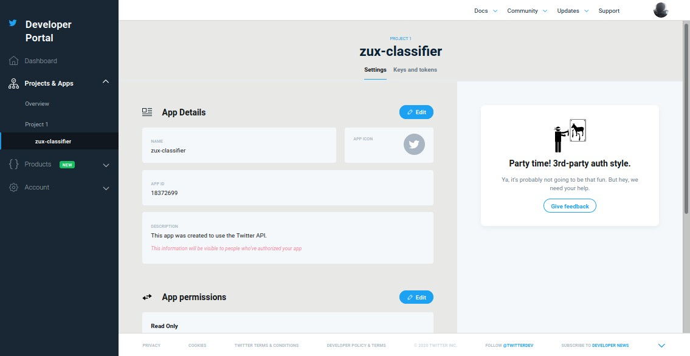
Perancangan
Antar Muka
-
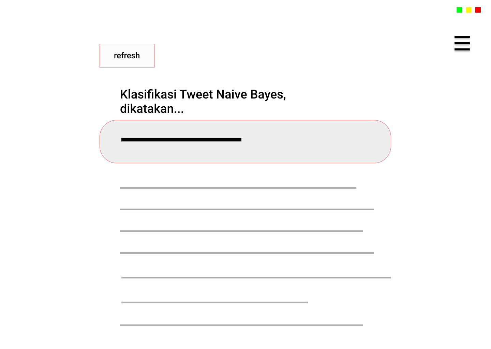
Perancangan
Antar Muka
BAB V
Kesimpulan Dan Saran
Ron Jeffries thinks it is always BAD:
- Agile software development is about turning “next time” into “this time”, as often and as frequently as we can. It’s about improving the design as often as we can, as soon as we can.
- Sooner, or later, it seems, we’ll have an idea or an understanding that we can’t put in, because we, or the software, has moved on. But if we can put off that moment as long as possible, we’ll do better
Kesimpulan
- Naive Bayes dapat digunakan sebagai klasifikasi untuk memisahkan dua label terindikasi terorisme dan yang bukan terindikasi terorisme.
- Data yang diambil twitter dapat digunakan untuk mengklasifikan karena terdapat hasil yang diperoleh.
- Hasil klasifikasi algoritma Naive Bayes untuk mengklasifikasikan pemahaman terorisme di sosial media dikategorikan baik.
Saran
- Penelitian selanjutnya bisa menggunakan sumber data lain yang terbuka atau menambah data yang telah diperoleh pada penelitian ini.
- Penelitian selanjutnya bisa menggunakan metode yang berbeda seperti menggunakan metode pembobotan tf-idf
- Penelitian selanjutnya bisa menggunakan algoritma klasifikasi lain seperti Support Vector Machine, K-Nearest Neighbor, dan lainnya.
Sekian & Terima Kasih

bit.ly/klasifikasi-as